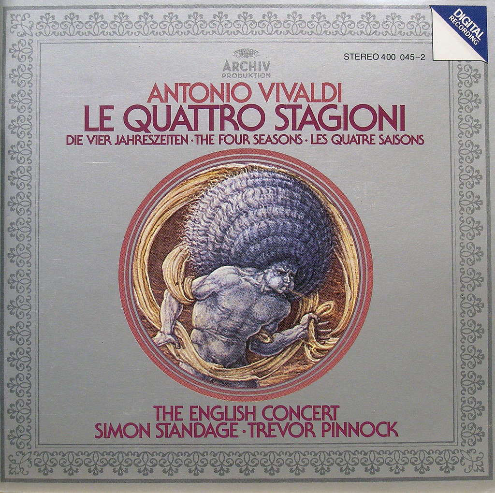

Antonio Vivaldi nasce a Venezia, il 4 marzo 1678 ed è considerato uno dei maggiori compositori del periodo barocco. La sua musica contribuì allo sviluppo e alla diffusione del concerto strumentale, influenzando numerosi compositori europei del Settecento. Le sue opere si distinguono per l'energia ritmica, i contrasti musicali e l'importanza del violino.
Tra i suoi principali contributi musicali troviamo:
